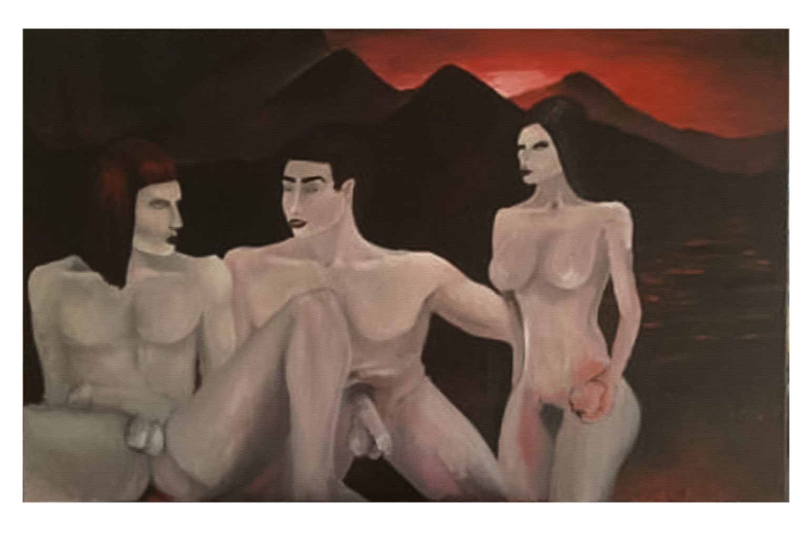
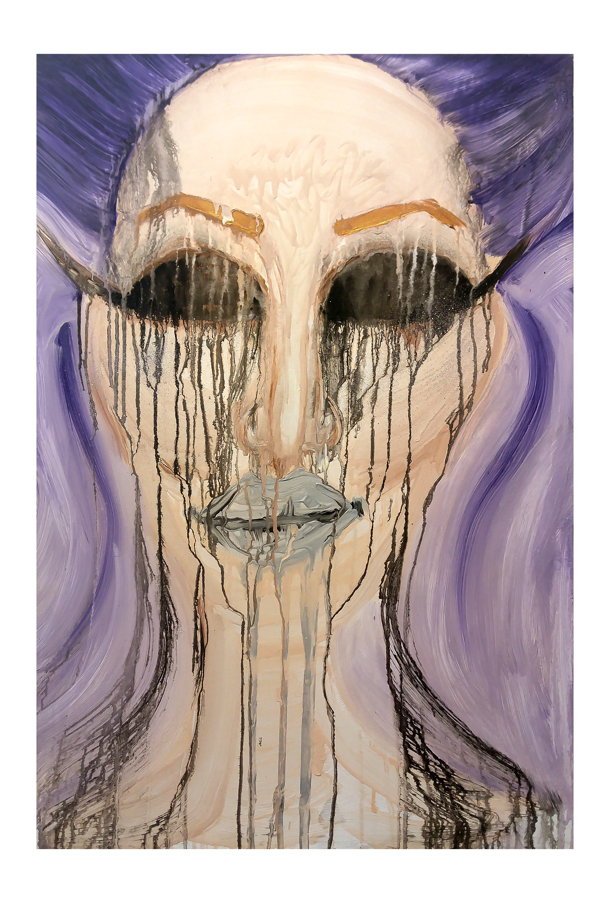
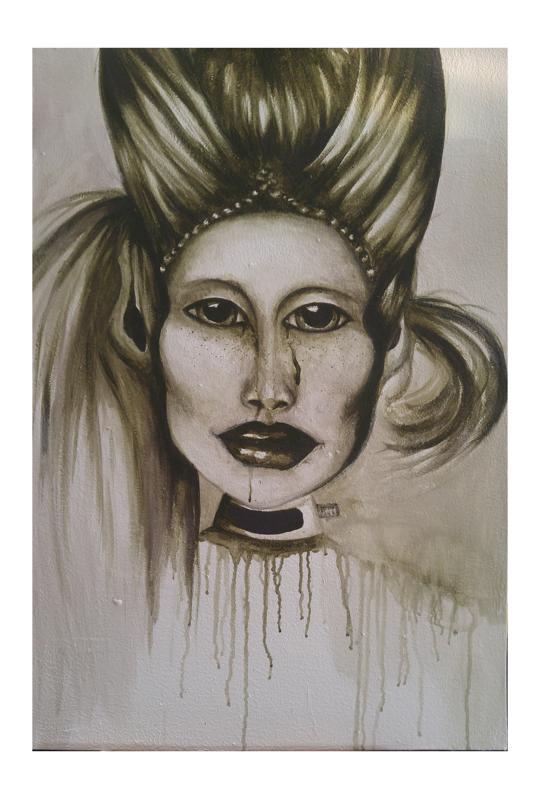
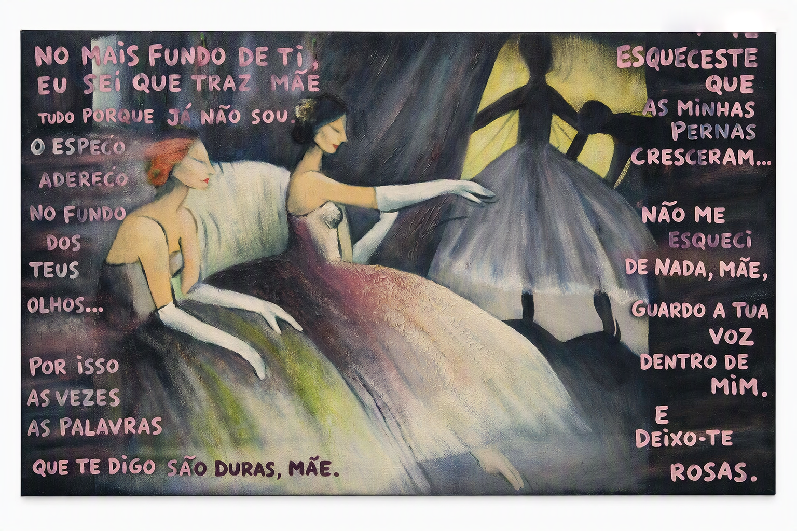
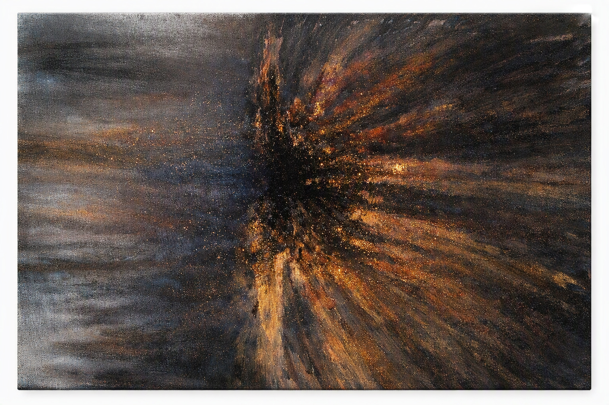

Pinturas Fisicas
Obras físicas realizadas com materiais tradicionais — acrílico, óleo e técnicas mistas, explorando luz, matéria e presença.

Título: "Crepúsculo” Técnica: Esmalte vermelho e acrílico sobre tela Ano: 2017 Descrição: “Crepúsculo” apresenta três figuras humanas envoltas numa atmosfera de fogo e sombra. O esmalte vermelho serve de base ardente, evocando sangue e desejo, enquanto o acrílico suaviza a superfície, revelando corpos pálidos que emergem do escuro como aparições. O cenário, dominado por montanhas negras e um céu em combustão, sugere um espaço mítico — um limbo entre o terreno e o divino, onde o calor da cor se confunde com o pecado. As figuras, imóveis e intensas, parecem partilhar um segredo ancestral, um pacto silencioso sob a luz vermelha que tudo consome. A obra é uma invocação do poder da cor e da carne, um ritual pictórico onde o vermelho se torna símbolo de tentação, vida e condenação.

“Dissolução”
Técnica: Acrílico sobre tela
Ano: 2017
“Dissolução” é uma pintura realizada em 2017 que explora o comportamento físico da tinta acrílica — a textura, o escorrimento e o efeito visual do derreter. A composição parte de uma estrutura facial abstrata, onde os traços se fragmentam e se expandem através de linhas verticais e fluxos de pigmento. A paleta combina tons lilás, bege e grafite, criando uma atmosfera de transição entre o sólido e o líquido. O gesto pictórico evidencia o movimento da matéria, transformando o rosto num campo de experimentação sobre o tempo, a gravidade e a fluidez da cor. A obra insere‑se numa pesquisa sobre o limite entre figura e dissolução, onde o processo físico da pintura se torna o próprio tema.

“Entidade”
Técnica: Acrílico sobre tela
Ano: 2018
“Entidade” representa uma figura feminina de caráter imperial, concebida como símbolo de poder e domínio espiritual. Executada em tinta acrílica, com tons esverdeados musgo e grafite, a obra traduz a presença de uma mulher nobre, dotada de autoridade e atributos sobrenaturais. A pintura foi realizada diretamente pela observação real do artefacto escultórico, que serviu de referência material e simbólica. Essa relação entre pintura e escultura reforça o caráter tridimensional da representação, aproximando a figura de uma entidade tangível e ritualística. A composição frontal e o olhar intenso sublinham a dimensão hierática da personagem, enquanto os escorridos verticais e a textura da superfície sugerem uma energia que se expande para além do corpo. O tratamento cromático e o contraste entre luz e sombra conferem à obra uma atmosfera de solenidade e mistério.

“No mais fundo de ti”
Técnica: Óleo sobre tela
Ano: 2016
Descrição expandida: Esta pintura é uma reinterpretação contemporânea do universo de Henri de Toulouse-Lautrec, onde o olhar íntimo sobre a feminilidade e o espaço teatral se transforma num diálogo emocional entre mãe e filho. As figuras femininas, envoltas em tons suaves e gestos contidos, evocam o tempo suspenso da infância e o eco das palavras que permanecem. A composição, marcada por contrastes entre sombra e luz, cria uma atmosfera de lembrança e introspeção. O texto inscrito na tela — um excerto do poema “As Mãos e os Frutos” de Eugénio de Andrade — reforça essa dimensão poética e confessional, transformando a pintura num espaço de encontro entre imagem e palavra. A obra convida o observador a penetrar no “fundo dos olhos” da figura materna, onde se guardam as vozes e as rosas da memória. É uma homenagem à delicadeza e à força do vínculo materno, reinterpretada através da estética expressionista e da sensibilidade moderna.

“Suspensão”
Técnica: Acrílico e glitter sobre tela
Ano: 2018
“Suspensão” é uma obra em acrílico e glitter que explora a ideia de energia primordial detida no instante anterior ao movimento total. A composição nasce de um núcleo escuro e denso, onde o brilho metálico do glitter se concentra, criando um ponto de tensão luminosa que parece pulsar sem nunca se libertar por completo. A partir desse centro, irrompem fluxos de cor — amarelos, laranjas, cobre e dourados — que se projetam para o exterior com força gestual. O lado direito mantém a intensidade da expansão, enquanto o lado esquerdo revela uma transição mais suave: as cores tornam‑se aguadas, difusas e arrastadas, como se a energia se dissolvesse lentamente no espaço‑tempo, suspensa entre avanço e retração. A paleta cromática combina preto e cinza como base estrutural, cobre e dourado como elementos de luz e vibração, glitter dourado, branco como acentuação luminosa, e subtis tons rosados resultantes da mistura entre cobre, branco e cinza — criando uma atmosfera de suspensão entre calor e neutralidade. Essa assimetria entre explosão e dissolução constrói uma narrativa visual sobre expressão e contenção, onde o gesto pictórico oscila entre o ímpeto e a pausa. A obra combina a fisicalidade do acrílico com o brilho do glitter, acrescentando profundidade, vibração e uma sensação de luz suspensa. “Suspensão” é uma meditação visual sobre o instante em que a matéria hesita entre emergir do vazio ou permanecer nele — um equilíbrio ambíguo entre o aguado e o texturado, entre o que se revela e o que se dissolve.